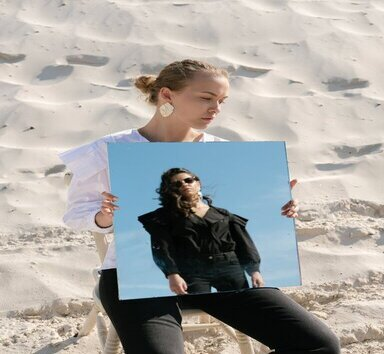
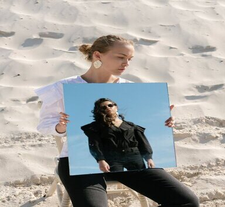

Yang
My name is Yang, and I have extensive experience in the world of photography. I can make that special moment immortalized in a wonderful way for you and your family. For me, photography is more than an art, it is the power to make those moments that we never want to forget even more special, perhaps it is a photo session, a wedding or a graduation or simply an important family moment, I can make it more than a single moment. In addition, I will give you a printed album the first time you hire me along with your digital photo package that can be edited according to your pleasure.

Andy
I am Andy and in the context of photography I consider myself an artist. I have always tried to transmit photography to everyone as the way in which we can turn life into art, so every space of time in which I can put this gift into practice, I try to take it to higher levels where I can make reality into a wonderful sleep. My clients are those who are looking for something more in their photos, something that they can become familiar with no matter the circumstance because the moments of photos are all special. In me you can find the photographer you are looking for; I am even adapted to all kinds of scenarios so you can trust me first hand. Contact me and let's make your photos a dream.
 

Andy
My name is Anna and I enjoy those magical moments that you want to immortalize with a beautiful photo so that our generations remember them. I love the word family and that is my specialty in photos. I can make your family enjoy a divine photo in a very special moment. I love connecting those moments with nature. Thinking is the best way to decorate our photos and it also feels different when you drink it than the traditional way. Photography is an art and requires professional people capable of giving you a great gift with their performance and I am one of the best among them.